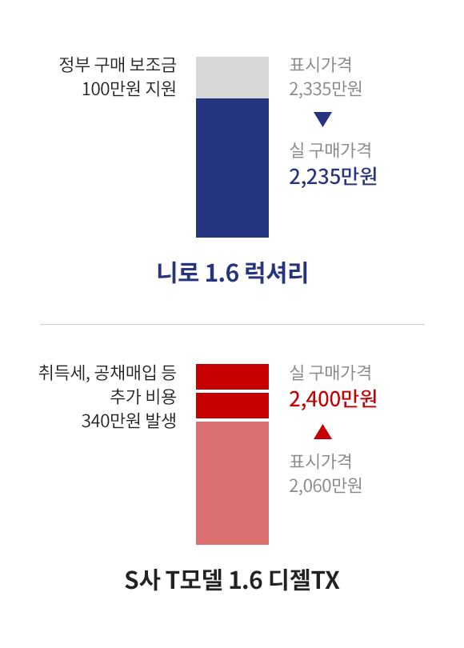

* 위 정보는 각 제조업체의 카다로그 및 홈페이지에 공개된 자료를 바탕으로 작성하였습니다.
니로의 축거는 한 차급 위,
준중형 SUV보다도 길어
실내공간이 무척 쾌적합니다.
니로는 동급차량 대비 가장 긴 2,700mm의 축거를 가지고 있는데 축거의 길이가 중요한 이유는 레그룸 등 실내거주 공간성 확보와 직결되기 때문입니다. 긴 휠베이스 덕분에 실내 거주성이 무척 좋고 키가 184cm인 제가 타도 참 편안합니다. 전고가 높아서 타고 있으면 헤드룸도 충분합니다. 시트포지션을 굳이 낮추지 않아도 넉넉하죠.
쌍둥이 자녀가 있는 가족은 잠깐 외출에도 짐이 정말 많습니다. 처음에 니로의 통 큰 속내를 의심했던 아내도 두 개의 카시트와 큰 짐을 싣고 나서도 쌍둥이를 돌볼 수 있는 뒷 공간 덕분에 외출 시에는 무조건 니로만을 고집한답니다.
친환경 하이브리드라는 이점 때문에 취득세 감면 (최대 140만원), 공채매입 감면(서울 기준 최대 200만원), 그리고 모든 구매자에게 조건 없이 제공되는 구매보조금(100만원)까지! 계산기를 두드려본 결과, 럭셔리의 경우 경쟁사 모델보다 낮은 차량가격으로 니로를 구매할 수 있었습니다.

항상 남산터널을 지나가는데 하루에 4,000원,
한 달 근무일 기준 8만원, 1년 동안 약 100만원 가량을 세이브하는 셈이어서 돈 벌어주는 차량이 되었습니다.
여유 있는 실내 공간이 필요하고
경제적인 차량을 원한다면
반드시 고려해볼 만한 차 니로.
앞으로도 대한민국의 대표
하이브리드 SUV로 승승장구하길
기대해 봅니다.